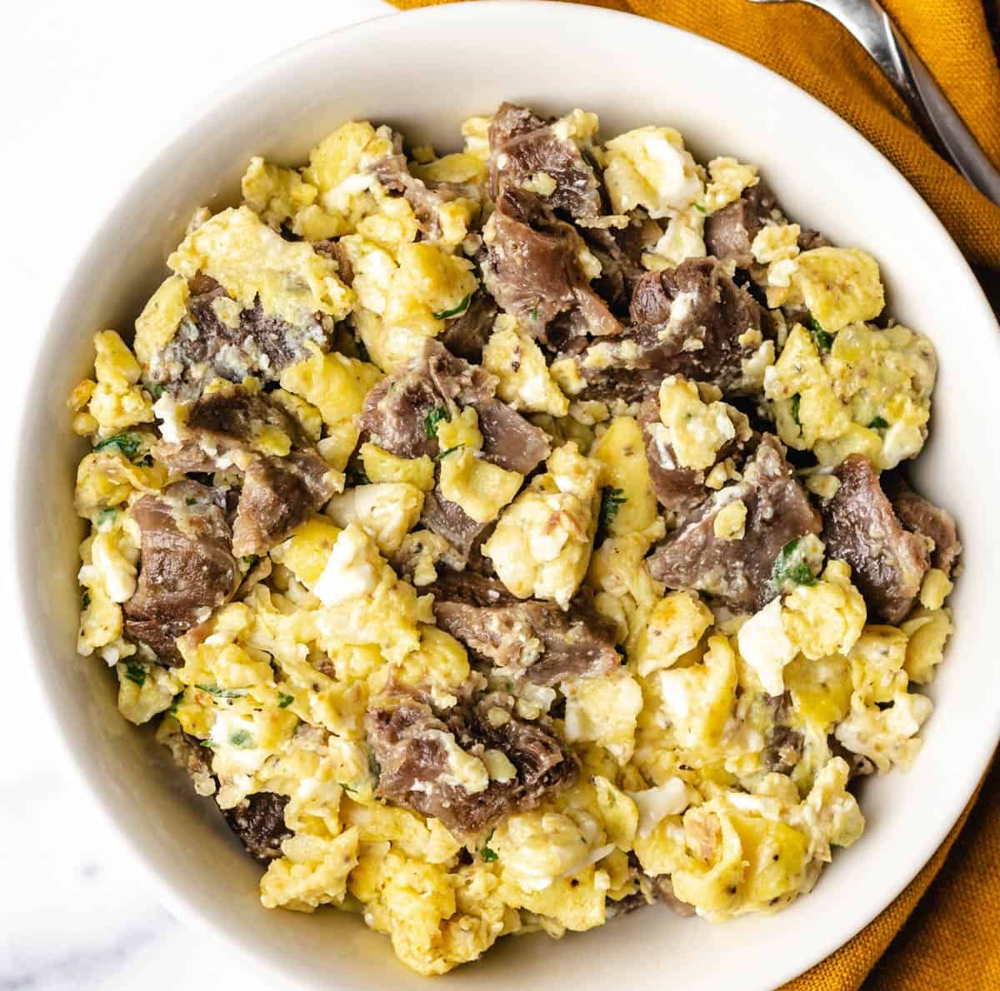

Tasty Eggs

Description
Ingredients
- BBQ Ribeye
- Eggs
- Salt
- Butter
Steps
- Slice beef into 2-4mm thick slices
- Melt butter into pan for beef and eggs
- Let steak simmer in the butter for a few minutes
- Break eggs into pan and scramble
- Add salt to taste while cooking